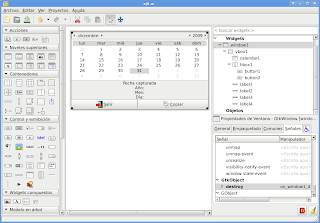
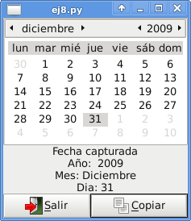

Desarrollo de aplicaciones gráficas con python+gtk+glade. Parte 8. Calendario
Posted on jue 31 diciembre 2009 in Tutorial Python • 1 min read
Este tutorial trata sobre el uso del widget calendario, como capturar la fecha al dar clip y mostrarla en la misma ventana.
La figura muestra el diseño de la aplicación

El código se muestra a continuación:
```python
!/usr/bin/env python
-- coding: utf-8 --
import gtk, time
class App: def init(self): #Manejo del archivo glade por medio de gtkbuilder self.glade_file = "ej8.ui" self.glade = gtk.Builder() self.glade.add_from_file(self.glade_file) # cargar los widgets de la interfaz self.window = self.glade.get_object('window1') self.button1 = self.glade.get_object('button1') self.button2 = self.glade.get_object('button2') self.calendario = self.glade.get_object('calendar1') self.label1 = self.glade.get_object('label1') self.label2 = self.glade.get_object('label2') self.label3 = self.glade.get_object('label3') self.label4 = self.glade.get_object('label4') #Asociar los eventos de los 2 botones y de la ventana self.window.connect("destroy",self.on_window1_destroy) self.button1.connect ("clicked",self.on_button1_clicked) self.button2.connect ("clicked",self.on_button2_clicked) #Tupla que maneja los meses del año self.meses = ('Enero','Febrero','Marzo','Abril','Mayo','Junio','Julio','Agosto','Septiembre','Octubre','Noviembre','Diciembre') #Se muestra todos los widgets self.window.show_all()
def on_window1_destroy(self,*args): #Cerrar aplicación gtk.main_quit()
def on_button1_clicked(self,*args): #Cerrar Aplicación gtk.main_quit()
def on_button2_clicked(self,*args): #Capturar los datos del calendario y presentarlos en las etiquetas agno, mes, dia = self.calendario.get_date() texto_agno = "Año: %s" %agno texto_mes = "Mes: %s" %self.meses[mes] texto_dia = "Dia: %s" %dia self.label2.set_text(texto_agno) self.label3.set_text(texto_mes) self.label4.set_text(texto_dia)
def main(self): gtk.main()
if name == "main": app = App() app.main()
```
En la siguiente figura se muestra la aplicación en funcionamiento:

===
¡Haz tu donativo! Si te gustó el artículo puedes realizar un donativo con Bitcoin (BTC) usando la billetera digital de tu preferencia a la siguiente dirección: 17MtNybhdkA9GV3UNS6BTwPcuhjXoPrSzV
O Escaneando el código QR desde billetera: